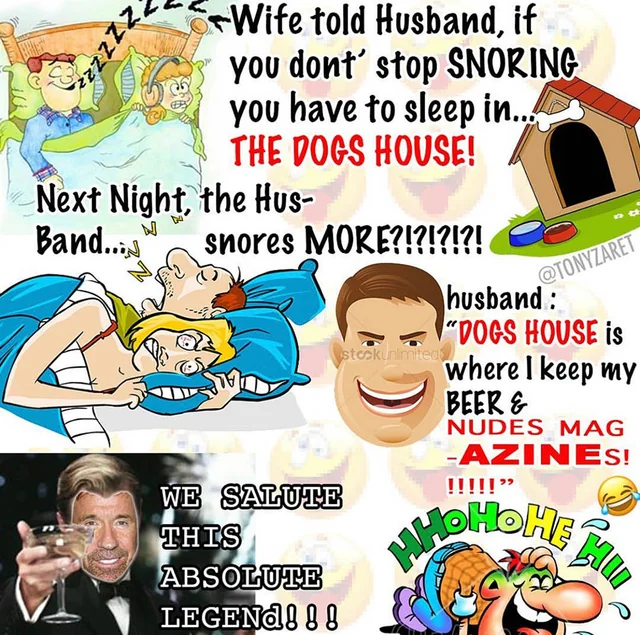

Edginess, trolling: general thoughts and personal experience
A confession: I was edgy at one point. I was not a nice guy on the internet, I know, cancel me now.
Even a couple years back, I did and said some shit online that - trust me - would NOT fly IRL. Fists would fly IRL. I think.
And I'm not a bad person IRL. At least I don't think I am. I do think I am a piece of shit from time to time, and really, if you are too, that's ok, c'est la vie.
The reason this even popped up in my head is some Discord drama (my beloved). I won't go into details, but it can be best summed up in 1 (2?) word(s): Rent-free.
Usually, it doesn't hit home so much that I self-reflect, but when it comes to being edgy, trolling people online and such, it did hit home that I, only a couple years back, was not much different.
For context, I am 22 as of writing this document, and in my teens up into my early adulthood (I am still a babby in that regard), I was participating in several trolling activities that, looking back, were just straight cringe.
In particular I found a GIF in my picker that said "the suicide hotline after inventing trans people" and underneath was Vince McMahon playing with dollar bills (you know this GIF most likely), like, at a certain point in time I thought this was... funny?
Now, once again, I don't think I'm a bad person. Heck, I wouldn't say this to a trans person's face IRL ever. I have friends who are anything but hetero, suffice to say I was covering my online personality in several layers of irony.
Maybe that's not such a bad thing. Having a laugh is healthy. Being able to break free from negative thoughts is good. The messed up part is doing so at the expense of other people.
If you dig up some of my old Discord messages, don't act surprised. I toldyaso. Heck, perhaps you too were edgy at one point.
I can't ultimately change people, but I recommend that you take steps to not make other people feel shitty just for a little bit of an ego boost.
Personally, what helps me is:
- having priorities
- valuing your time and energy
- talking to people you can trust, either IRL or online, instead of repressing your true feelings
- just not being a 100% different person online than IRL.
Again, you don't have to be online EXACTLY how you are IRL, that can in fact make things bad for you real fast. I'm just giving my 2 cents on how I'm moving on.
Now this document is getting long enough as-is but I do see a lot of cases where people online are trolling because they are repressing certain feelings, which in turn bubbles over and they start projecting.
At the end of the day, treat people how you wish to be treated yourself. If it's respect you are seeking, treat other people with respect. Only treat people like shit if you wish to be treated like shit yourself, if you even want that.
And if you were (or are) in the same boat that I am in, don't sweat it. Yes, the internet can be unforgiving (cough cancel culture), but most sane people pay no mind, unless you happen to defend some REAL messed up shit like pedophilia, get help in that case.
I'm not on the internet to be sad. I don't think anyone is. Unless you make money off of it. Nikocado Avocado is pretty good at that.
idk how to end this document so I will just attach a hyper-ironic meme or smth, Ta-ra for now!
